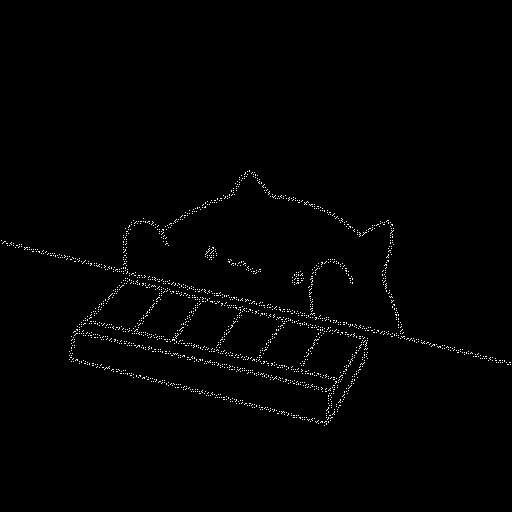

<!DOCTYPE html>
<html>
  <meta charset="utf-8" />
  <title>example</title>
  <link
    href="https://cdn.jsdelivr.net/npm/bootstrap@5.1.2/dist/css/bootstrap.min.css"
    rel="stylesheet"
    integrity="sha384-uWxY/CJNBR+1zjPWmfnSnVxwRheevXITnMqoEIeG1LJrdI0GlVs/9cVSyPYXdcSF"
    crossorigin="anonymous"
  />
  <link href="./static/css/main.css" rel="stylesheet" />
  <link href="./static/css/prism.css" rel="stylesheet" />
</html>

<body>
  <div class="container">
    <div class="row">
      <div class="col col-lg-7">
        <h1>
          <a href="index.html" style="text-decoration: none"
            >Visual Cryptography</a
          >
        </h1>
        <div class="code-section">
          <pre class="language-python">
                    <code>
import numpy as np
import cv2


def condi_inv(image, noise):
    layer = np.zeros(image.shape)
    h, w = image.shape
    for i in range(h):
        for j in range(w):
            if image[i][j] == 255:
                layer[i][j] = noise[i][j]
            else:
                if noise[i][j] == 255:
                    layer[i][j] = 0
                else:
                    layer[i][j] = 255
    return layer


def main():
    # 輸入檔名以讀檔
    file = input('Input the file name: ')
    src = cv2.imread(file, 0)
    h, w = map(lambda l: l//2, src.shape)

    # 重新調整大小 (圖太大跑很久XD)
    image = cv2.resize(src, (w, h), interpolation=cv2.INTER_AREA)

    # 建立噪圖 (隨機生成)
    noise = np.random.uniform(0, 255, image.shape)

    # 控制像素閥值 (令灰階圖層轉換成黑白圖層)
    th_args = (127, 255, cv2.THRESH_BINARY)
    _, imageLayer = cv2.threshold(image, *th_args)
    _, noiseLayer = cv2.threshold(noise, *th_args)

    # 利用原圖與噪圖 生成出 條件性反轉的密圖
    secretLayer = condi_inv(imageLayer, noiseLayer)

    # 存檔
    cv2.imwrite('secret_1.png', secretLayer)
    cv2.imwrite('secret_2.png', noiseLayer)

    # 驗證疊圖
    verific = np.zeros(image.shape)
    for i in range(h):
        for j in range(w):
            if secretLayer[i][j] and noiseLayer[i][j]:
                verific[i][j] = 255

    cv2.imwrite('verific.png', verific)


if __name__ == "__main__":
    main()
                        </code>
                    </pre>
        </div>
      </div>
      <div class="col-md-auto">
        <a href="index.html"></a>
      </div>
    </div>
  </div>
  <link href="./static/js/prism.js" />
</body>
